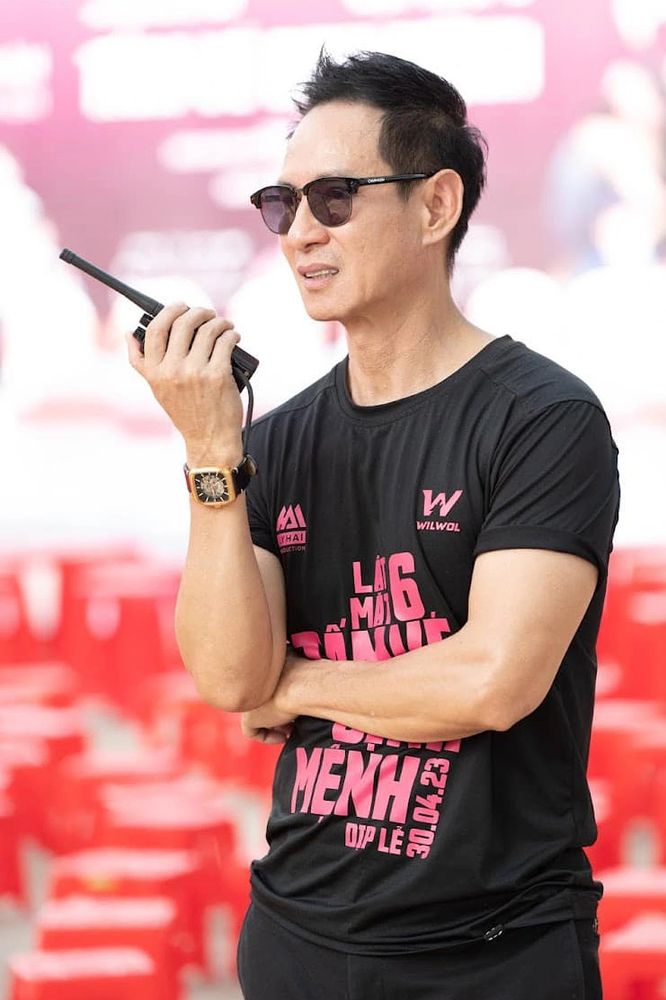

Lý Hải: 'Phim tôi được yêu thích nhờ bình dân'
Lý Hải nói "Lật mặt 6" đạt doanh thu 140 tỷ đồng sau 6 ngày nhờ nội dung bình dân, đầu tư bối cảnh kỹ lưỡng. Lật mặt 6: Tấm vé định mệnh đang dẫn đầu cuộc đua phòng vé kỳ nghỉ lễ. Đạo diễn Lý Hải nói về cảm xúc khi tác phẩm thắng lớn và câu chuyện hậu trường thực hiện phim. - Anh đón nhận tin "Lật mặt 6" chạm mốc doanh thu 140 tỷ đồng ra sao? - Tôi bớt lo hơn lúc phim mới ra rạp, song vẫn thấy hồi hộp. Tôi nghĩ phim được yêu thích nhờ sự gần gũi, bình dân, không đao to búa lớn. Khi quay, tôi không hướng các diễn viên chỉ đóng phim, mà đề nghị thực sự nhập tâm vào nhân vật, đặt chính họ vào trong tác phẩm. Tôi cũng đề cao yếu tố chân thật trên phim trường. Nếu êkíp không tung các video hậu trường, đa số người xem sẽ nghĩ tôi chỉ mượn nhà người dân làm bối cảnh. Thực tế, nhiều set quay lớn đều do êkíp dựng lên. Chẳng hạn, khi về xã Định Yên, chúng tôi tái hiện bối cảnh làng nghề truyền thống, xây dựng nhiều lò nhuộm lát, bãi sân phơi chiếu, phục dựng khung cảnh phiên chợ ngày và đêm. Cảnh hỏa hoạn cao trào đầu phim, êkíp xây xưởng chiếu 500 m2, tự dựng khung trụ, lợp mái. Hoặc với phân đoạn kịch tính của nhóm nhân vật trong khu nhà nghỉ, chúng tôi dựng toàn bộ khu trọ vì có nhiều chi tiết nhạy cảm, không thể mượn nhà dân. Quay xong mỗi cảnh, êkíp liền dỡ bỏ để trả lại hiện trạng. Tôi cũng quan niệm không lạm dụng kỹ xảo để tránh phản tác dụng khi xem trên màn ảnh rộng.
- Anh nói gì trước những lời nhận xét kịch bản phim còn mỏng, nhiều tình tiết thiếu logic? - Mỗi khi ra dự án mới, tôi thường âm thầm đến các rạp theo dõi phản ứng khán giả. Với mỗi lời góp ý, tôi luôn lắng nghe, xem bản thân thiếu sót chỗ nào, từ đó rút kinh nghiệm cho phim sau. Về chuyện kịch bản còn mỏng, sạn, tôi nghĩ nhiều phim - kể cả Hollywood - cũng mắc lỗi tương tự. Trong Lật mặt 6, tôi tự hào các cảnh quay đều được tiền kỳ, hậu kỳ tròn trịa, khâu diễn xuất hợp lý vì được casting kỹ lưỡng. Tôi vẫn nỗ lực học hỏi mỗi ngày để hạn chế những sạn không đáng có. Trong thâm tâm, tôi cố gắng để bất cứ khán giả nào cũng không phải tiếc khi bỏ tiền mua vé và hơn hai giờ đồng hồ xem phim, ra khỏi rạp với tâm trạng mãn nguyện. - Cảnh nào khiến anh gặp khó nhất trong phim? - Với tôi, phân cảnh thử thách nhất trong Lật mặt 6 là đoạn xe bị lật cuối phim, quay vòng tròn, ba diễn viên Quốc Cường, Huy Khánh, Diệp Bảo Ngọc ngồi bên trong. Khi xem nhiều phim nước ngoài, tôi thấy mặt các nhân vật vẫn được quay rõ trong các tình huống tương tự, và trăn trở thực hiện bằng được cảnh quay đó. Êkíp chuẩn bị đủ thiết bị trong hai ngày, thêm một ngày quay cho phân đoạn dài gần một phút trên màn ảnh rộng. Tôi cũng phải lót đồ bảo hiểm đầy đủ cho diễn viên để đề phòng tai nạn. Xong cảnh quay, mặt mũi họ đều tái nhợt, may mà kết thúc thành công, hiệu ứng tốt khi lên phim.
- Anh áp lực ra sao về doanh thu khi phần sau của series "Lật mặt" luôn cao hơn phần trước? - Mỗi lần phim ra rạp, tôi chỉ mong huề vốn, có kinh phí làm tiếp. Với tôi, doanh thu luôn là câu chuyện vô chừng, "phước ai người nấy hưởng", không dám đòi hỏi (cười). Điều quan trọng nhất với tôi là các tác phẩm được khán giả yêu mến. Sau hơn bảy năm làm phim với sáu dự án điện ảnh, thỉnh thoảng tôi vẫn bị gọi là đạo diễn "tay ngang", song tôi không chạnh lòng vì điều đó. Ngày trước, tôi học trường Sân khấu Điện ảnh, chuyên về diễn xuất. Sau này, tôi theo nghiệp ca hát hàng chục năm nên khán giả quên mất xuất phát điểm ban đầu của tôi. Nay, tôi mới được quay lại với đam mê thực sự.
- Bận rộn với phim ảnh, anh cân bằng cuộc sống bên vợ và bốn con ra sao? - Tôi có rất ít bạn thân trong showbiz. Khi lập gia đình, tôi càng hạn chế ra ngoài vì thấy quỹ thời gian bên vợ con quá ít. Tôi may mắn có vợ sát cánh trên phim trường. Mỗi lần tôi hoàn thành kịch bản, vợ luôn là người đầu tiên đọc, góp ý rằng tình huống này còn thừa hay phân đoạn kia chưa đủ kịch tính. Minh Hà rất tôn trọng quan điểm làm việc của tôi. Là nhà đồng sản xuất Lật mặt 6, cô ấy ủng hộ mỗi quyết định của tôi khi bỏ tiền dàn dựng bối cảnh, không tính toán vì hiểu tôi làm gì cũng đều có nguyên do.
Gia đình tôi sống rất bình dân. Nhiều người quen bảo hay thấy tôi ăn cơm hộp, ngồi cà phê ngoài lề đường, ra ngoài hiếm khi mang tiền trong người. Tôi được sinh ra ở một miền quê nghèo của Tiền Giang. Lớn lên với tuổi thơ cơ cực, thiếu trước hụt sau, tôi thấm nhuần giá trị của sức lao động. Tôi thường nói với các con: mua một bó rau muống 10.000-20.000 đồng bên ngoài khác với việc trồng chúng. Bởi khi tự chăm sóc, lặt bỏ một cái lá già mình cũng thấy tiếc, ăn một tô canh cũng thấy ngon hơn nhiều.